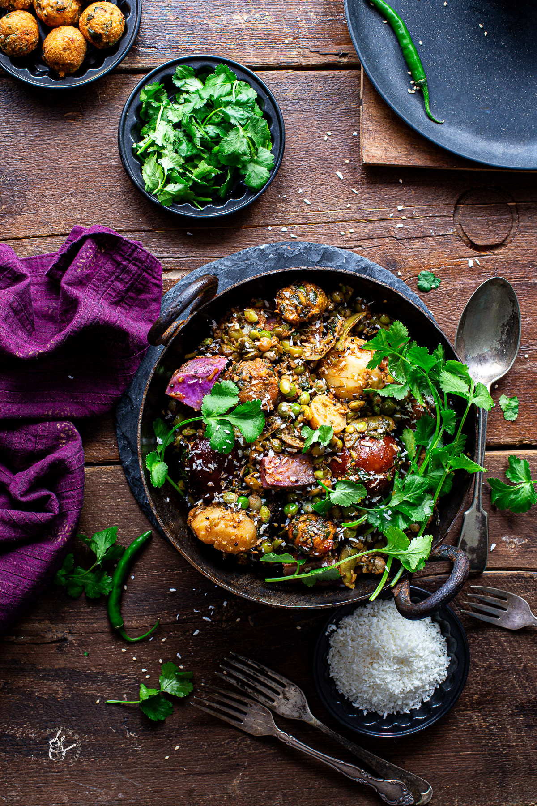

Ingredients:
For the green paste:
1 cup coriander leaves
1/2 cup fresh fenugreek leaves (methi)
4-5 green chilies
1-inch ginger
4-5 cloves garlic
1 tablespoon lemon juice
For the stuffing:
1 cup purple yam (kand), peeled and cubed
1 cup sweet potato, peeled and cubed
1 cup raw banana, peeled and cubed
1 cup baby potatoes, peeled
1 cup fresh pigeon peas (tuvar dana)
1 cup fresh beans, chopped
1 cup fresh green chickpeas (chana)
1/2 cup peanuts
1/2 cup grated coconut
1 teaspoon turmeric powder
2 teaspoons red chili powder
2 teaspoons coriander-cumin powder
1 teaspoon garam masala
Salt to taste
Oil for frying
For the tempering:
3 tablespoons oil
1 teaspoon mustard seeds
1 teaspoon cumin seeds
A pinch of asafoetida (hing)
Instructions:
Make the green paste: Blend together coriander leaves, fenugreek leaves, green chilies, ginger, garlic, and lemon juice into a smooth paste. Keep it aside.
Prepare the stuffing: In a bowl, mix together purple yam, sweet potato, raw banana, baby potatoes, pigeon peas, beans, green chickpeas, peanuts, grated coconut, turmeric powder, red chili powder, coriander-cumin powder, garam masala, and salt.
Heat oil in a pan and add the mixed stuffing. Cook on low flame until the vegetables are tender, stirring occasionally. Remove from heat and keep aside.
In a separate pan, heat oil for frying. Fry the prepared stuffing mixture in batches until lightly browned. Remove and keep aside.
Stuff the green paste into the slits of the fried vegetables.
Heat oil in a deep pan. Add mustard seeds, cumin seeds, and asafoetida. Let them splutter.
Carefully place the stuffed vegetables in the pan. Cover and cook on low flame for 15-20 minutes or until the vegetables are cooked through.
Occasionally, gently turn the vegetables to ensure even cooking.
Once done, garnish with fresh coriander leaves and serve hot with puris or rotis.
Enjoy your homemade Undhiyu!